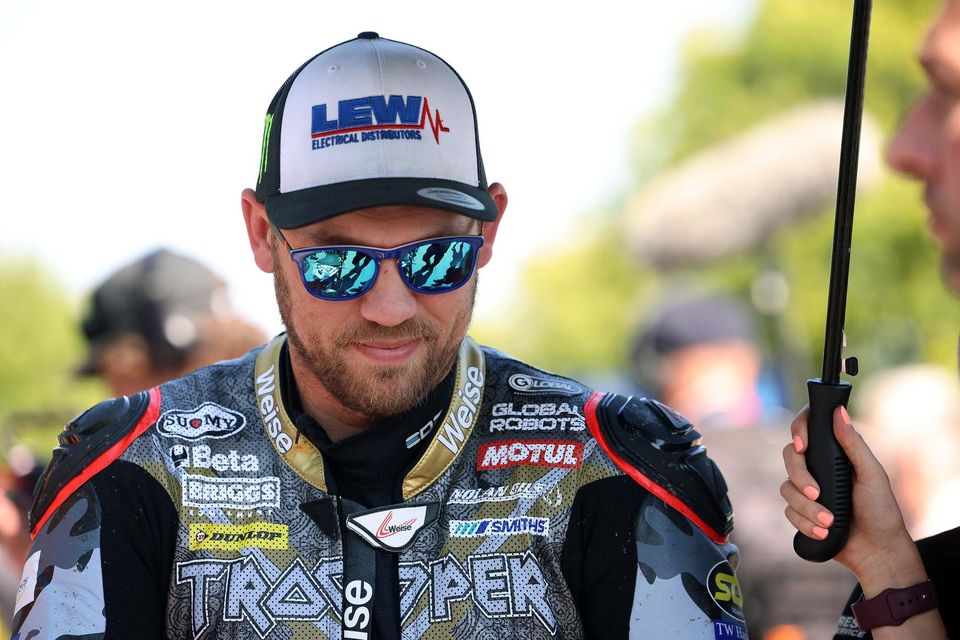

The Racers
John McGuinness

Born on April 16, 1972, in Morecambe, Lancashire, England, McGuinness has had a successful and illustrious career in road racing. Making his debut at the Isle of Man TT in 1996, McGuinness quickly made a name for himself as one of the most talented and fearless riders on the circuit. Earning the nickname "The Morecambe Missile" for his incredible speed and skill, he has 23 TT wins, making him one of the most successful riders in the event's history. He has won in supersport, superbike, and senior TT races. John McGuinness has also found success in other road racing events such as the North West 200 and the Macau Grand Prix.
Micheal Dunlop
Dunlop is a highly accomplished road racing motorcycle rider from Northern Ireland. Born on April 10, 1989, in Ballymoney, County Antrim, Dunlop comes from a legendary racing family, with his father Robert Dunlop and uncle Joey Dunlop being esteemed figures in the sport. Dunlop has achieved major success at the Isle of Man TT, amassing a remarkable tally of 19 TT wins, including victories in various classes such as Superbike, Supersport, Superstock, and Lightweight. In 2018, he set a new lap record at the event, becoming the first rider to complete a lap of the iconic Mountain Course in under 17 minutes. Dunlop has also excelled in other road racing competitions such as the North West 200 and the Ulster Grand Prix.
Peter Hickman
Peter Hickman is a British motorcycle racer known for his impressive performances in road racing events. Born on April 8, 1987, in Burton-upon-Trent, England, Hickman has become one of the rising stars in the sport. His racing career began on the short circuits, where he showcased his talent and versatility. However, it was in road racing that he truly made his mark. He has achieved notable success at events like the Isle of Man TT, the Ulster Grand Prix, and the Macau Grand Prix. At the Isle of Man TT, Hickman has emerged as a formidable competitor, securing multiple wins and setting lap records. In 2018, he achieved a historic feat by winning the Senior TT, setting a new outright lap record, and becoming the fastest rider to complete a lap of the Mountain Course.